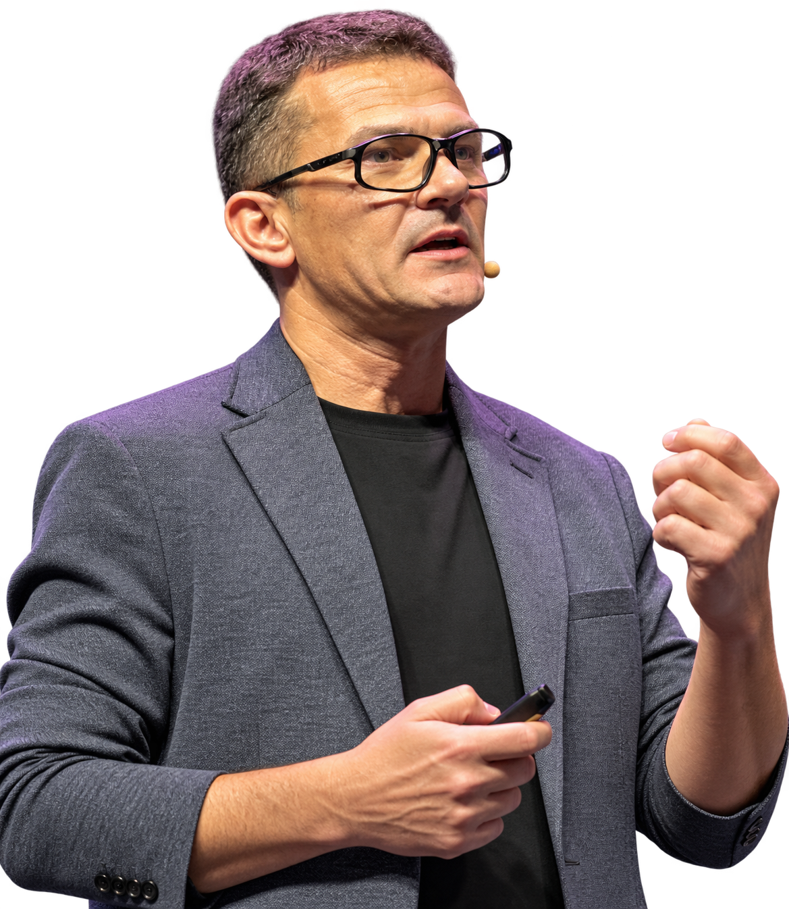

Jose M. Alvarez
I lead the Physical AI and Autonomous Systems Research Group at NVIDIA, CA, USA. Our research looks at autonomy at the system level. We develop models that don’t just perceive the world, but also predict it, simulate it, and reason about counterfactuals before they act. They then improve continuously through closed-loop data generation and evaluation. This includes world models, end-to-end driving, vision-language reasoning, and efficient deployment on the edge.
News
Research
Invited Talks
Interns
Awards
Academic Service
Tutorials
Workshops
News
2026
2025
2024
2023
2022
2021 & Older
I gave the opening Keynote at DLBCN on self-improving AI models.
2 Invited Talks at ICCV 2025 Workshops. Stay Tuned
I will organize, together with Antonio M. Lopez and Dariu Gavrila (Program Chair), the Intelligent Vehicle Conference in 2028 in Barcelona!
Keynote at the Deep Learning Symposium in Barcelona, in December 2025. See you all in Barcelona.
Keynote talk at FISITA 2025 (Intelligent Safety Conference 2025), Xi'an China. Stay Tuned.
1 Paper accepted to NeurIPS 2025!
June 2025: Our Our Generalized Trajectory Scoring Method won the End-to-End Driving challenge at CVPR 2025!
1 Paper accepted to ICCV 2025!
Hydra-NeXt: Robust Closed-Loop Driving with Open-Loop Training
4 Papers accepted to CVPR 2025!
MDP: Multidimensional Vision Model Pruning with Latency Constraint
PARC: A Quantitative Framework Uncovering the Symmetries within Vision Language Models
Joint Optimization of Neural Radiance Fields and Continuous Camera Motion from a Monocular Video
OmniDrive: A Holistic Vision-Language Dataset for Autonomous Driving with Counter Factual Reasoning
We are organizing 2 tutorials at CVPR 2025.
Our paper Advancing Weight and Channel Sparsification with Enhanced Saliency has been accepted to WACV 2025!
We are organizing three workshops at CVPR 2025:
July 2023: 6 new papers accepted at ICCV 2023
April: We will be organizing a tutorial at ICCV, Paris, France 2023. Stay tunned.
Learning with Noisy and Unlabeled Data for Large Models beyond Categorization.
March: 2 new papers accepted at IV 2023
Shen et al. Hardware-Aware Latency Pruning for Real-Time 3D Object Detection.
Clemons et al. Leaf: Legacy Networks for Flexible Inference.
Sept. 2022: 1 paper accepted at BMVC 2022 .
Privacy Vulnerability of Split Computing to Data-Free Model Inversion Attacks
September 2022: 2 papers accepted at NeurIPS 2022
July 2022: 1 paper accepted at ECCV 2022 .
April 2022: Our paper on Robustness in Transformers has been accepted at ICML 2022
March 2022: 7 new papers accepted at CVPR 2022
Dec 2021: Presenting 2 papers at NeurIPS 2021:
October 2021: Presenting our active learning paper at ICCV 2021
1 new paper accepted at ICML 2021
2 new papers accepted at ICLR 2021
1 new paper accepted at ICCV 2021
3 new papers accepted at CVPR 2021
1 new paper accepted at WACV 2021
1 new paper accepted at IEEE-IV 2021
2 new papers accepted at IEEE CVPR 2020
1 new paper accepted at IEEE-IV 2020
1 new paper accepted at NeurIPS 2020
1 new paper accepted at WACV 2020
1 new paper accepted at ICLR 2020
↑ Back to top
Featured Research
Multimodal Planners
End-to-end planners that generate and score diverse trajectory candidates, reason about alternatives, and learn from closed-loop feedback.
Data-Centric AV
Deciding which data to collect, label, and train on, so that models improve efficiently as data grows rather than by volume alone.
Synthetic Data Generation
Using simulated and generated data to cover viewpoints, conditions, and scenarios that are rare or costly to capture on real roads.
Efficiency and Robustness
Making large perception and planning models fast enough for real-time deployment on the edge, and reliable under distribution shift.
↑ Back to top
Invited Talks Featured
Workshop Teaching Physical AI to Think Ahead: The Proactive Evaluation Flywheel for Safe Autonomy
AUTOPILOT Workshop @ CVPR 2026 · Jun 2026 · Denver, CO, USA
Workshop Pixels to Propositions: Language as the Backbone of Video Understanding
VOCVALC Workshop @ CVPR 2026 · Jun 2026 · Denver, CO, USA
Keynote Self-improving Physical AI with agents in the loop
DLBCN · Dec 2025 · Barcelona, Spain
Keynote Towards Safer and More Generalizable Autonomous Vehicles
FISITA 2025 · Xi'an, China
All talks
2026
2025
2024
2023 & Earlier
Lecture End-to-End Models for Autonomous Driving: From Direct Prediction to Counterfactual Deliberation on the Edge Workshop Beyond Prediction: Counterfactual Deliberation for L4 Autonomy Workshop Teaching Physical AI to Think Ahead: The Proactive Evaluation Flywheel for Safe Autonomy AUTOPILOT Workshop @ CVPR 2026 · Jun 2026 · Denver, CO, USA
Workshop Pixels to Propositions: Language as the Backbone of Video Understanding VOCVALC Workshop @ CVPR 2026 · Jun 2026 · Denver, CO, USA
Industry Accelerating Autonomous Mobility with NVIDIA DRIVE TechEx North America 2026 · May 2026 · San Jose, CA, USA
Industry Physical AI: The Next Step beyond Perception, Generative and Agentic AI Advanced Factories 2026 · May 2026 · Barcelona, Spain
Talk Self-improving (Physical) AI with reasoning in the loop Jan 2026 · Mountain View, CA, USA
Keynote Self-improving Physical AI with agents in the loop DLBCN · Dec 2025 · Barcelona, Spain
Workshop End-to-End Driving in the Era of Foundation Models FMAD @ ITSC 2025 · Dec 2025 · Sydney, Australia · with Xinlong (Alex) Sun
Workshop Scalable Autonomous Driving with Reasoning in the Loop WDFM-AD @ ICCV 2025 · Oct 2025 · Hawaii, USA
Workshop System-Level Optimization for Real-Time Inference Embedded Vision Workshop @ ICCV 2025 · Oct 2025 · Hawaii, USA
Talk Less is More: Accelerating AI with Advanced Data Strategies Aug 2025 · Toronto, Canada · Speaker: Nadine Chang
Talk Less is More: Accelerating AI with Advanced Data Strategies Jul 2025 · Barcelona, Spain · Speaker: Nadine Chang
Keynote Towards Safer and More Generalizable Autonomous Vehicles FISITA 2025 · Xi'an, China
Workshop Multimodal Planners for Dynamic Environments Interaction-driven Behavior, Prediction and Planning for Autonomous Vehicles Workshop @ IEEE-IV 2025
Workshop Towards Safer and More Generalizable Autonomous Vehicles Safe Artificial Intelligence Workshop @ CVPR 2025 · Nashville, USA
Industry From Research to Product: Transforming AV Technology with AI GTC 2025 · San Jose, CA, USA
Seminar Towards Robust and Reliable Autonomous Vehicles with Foundation Models NYU Seminar · Oct 2024 · New York, USA
Seminar Towards Safe and Reliable Autonomous Vehicles CMU · Pittsburgh, USA
Workshop Towards an Effective use of Foundation Models in Autonomous Driving Green Foundation Models Workshop @ ECCV 2024 · Milan, Italy
Workshop Towards Robust and Reliable AV with Foundational Models 2nd Workshop on Vision-Centric Autonomous Driving @ ECCV 2024 · Milan, Italy
Industry Achieving Better Accuracy in 3D Occupancy Prediction for Autonomous Driving GTC 2024 · San Jose, CA, USA
Workshop Camera-based perception for AV: From Data Collection to network Robustness E2E Autonomous Driving Workshop @ CVPR 2023
Workshop Optimizing large deep models for real-time inference Embedded Vision Workshop @ CVPR 2023
Seminar Efficient Deep Learning at Scale UvA Seminar · Oct 2022 · Amsterdam, The Netherlands
Industry Towards Robust Perception Systems in Open World GTC 2022 · San Jose, CA, USA
Seminar Deep Learning at Scale UvA Seminar · Oct 2021 · Amsterdam, The Netherlands
Industry Scaling-up Deep Learning for Autonomous Driving GTC 2019 · San Jose, CA, USA
Tutorial Scaling-up Deep Learning for Autonomous Driving MVA 2019 Invited Tutorial · Tokyo, Japan
Workshop Scaling up Deep Learning for Autonomous Driving ECCV 2018 Workshop · Munich, Germany
Workshop Efficient ConvNets for Perception in Autonomous Driving ICML 2017 · Sydney, Australia
Industry Efficient Deep Model Selection GTC 2017 · San Jose, CA, USA
Industry Efficient Networks for Real Time Scene Understanding GTCx Australia 2016 · Melbourne, Australia
Industry Large-scale scene understanding in constrained platforms NVIDIA RoadShow · Canberra, Australia
Workshop Compacting ConvNets for end to end learning Deep Learning Workshop @ ACRA 2015
↑ Back to top
Interns
2026
2025
2024
2023
2022
2021
2020
2019
2018
Michael Hu – PhD, New York University.Simon Gerstenecker – MSc, ETH Zurich.
Zhenxin Li – MSc, Fudan Univ.Jingyu Song – PhD, University of Michigan.Tolga Dimlioglu, PhD New York University.
Zhenxin Li – MSc, Fudan Univ.Shihao Wang – MSc, Beijing Institute of TechnologyZi Wang – MSc, Carnegie Mellon Univ.Sihan Liu – MSc, Fudan Univ.
Shan Wang – PhD, Australian National Univ.
Nikita Durasov – PhD, EPFLJenny Schmalfuss – PhD, University of StuttgartChonghao Sima – PhD, Hong Kong Univ.Jihao Liu – PhD, The Chinese University of Hong Kong.Feiyang Kang – PhD, Virginia Tech Univ.Vibashan VS – PhD, John Hopkins University
David Wang – PhD, Tsinghua Univ.
Shixing Yu – PhD, Univ. Texas Austin
Yanwei Li – PhD, CUHKZhiqi Li – PhD, Nanjing Univ.Zetong Yang – PhD, CUHKTzofi Klinghoffer – PhD, MITBingyin Zhao – PhD, Clemson Univ.
Annamarie Bair – PhD, CMU
Yilun Chen – PhD, CUHK
Alex Sun – MS, Stanford
Justin Hsu – BS, Stanford
Arnav Joshi – BS, Stanford
Shubhranshu Singh – MS, CMU
Jiayu Yang – PhD, Australian National University
Marc Finzi – PhD, NYUEnze Xie – PhD, HKURyan Humble – PhD, StanfordVlad Sobal – PhD, NYUJianna Liu – BS, MIT
Xinlong Wang – PhD, Univ. AdelaideDaquan Zhou – PhD, NUSFaith Johnson – PhD, RutgersJavier Sagastuy Brena – PhD, StanfordJoshua Chen – MS, CMU (now Nvidia)
Nithya Attaluri – BS, MIT
Jessica Lee – MS, CMU
Jiwoong Choi PhD, Seoul Nat. University (now NVIDIA)
Ismail Elezi PhD TUM (now PostDoc TUM)Shuxuan Guo - PhD. EPFL
Marvin Kim – MS CMU (now Waymo)
Lilian Luong – BS MITCynthia Liu – MS, MIT (now Cerebras)
Nadine Chang – PhD CMU Yerlan Idelbayev – PhD UC Merced (now Amazon)Xinnan Du – MS CMU (now Goldman Sachs)
Hoang Vu Nguyen – PhD Stony Brooks Univ.
Jiaming Zeng – PhD Stanford (now IBM Research)Yousef Hindy – MS Stanford (now NewCo)
Kashyap Chitta – MS CMU (now PhD student MPI)
↑ Back to top
Awards and Recognitions
3× 1st place at CVPR challenges
2 Innovation Awards
3 Best Paper / Poster Awards
ERC and Ramón y Cajal fellowships
Challenge Wins
Paper Awards
Fellowships and Honors
Service Recognition
1st Place, End-to-End Driving Challenge CVPR 2025 Runner-up Award and Innovation Award, RealADSim Workshop Challenge ICCV 2025 1st Place, End-to-End Autonomous Driving at Scale Challenge CVPR 2024 Innovation Award, End-to-End Autonomous Driving at Scale Challenge CVPR 2024 2nd Place, Driving with Language Models Challenge CVPR 2024 1st Place, 3D Occupancy Prediction Challenge CVPR 2023
SegFormer ranked #3 among the Top-10 Most Influential Papers NeurIPS 2021 Outstanding Research Award, “ErfNet: Efficient Residual Factorized ConvNet for Real-Time Semantic Segmentation” IEEE T-ITS 2020 Top Ten Research Papers 2010–2019, “Road Detection based on Illuminance-Invariance” IEEE T-ITS 2010–2019 Best Paper Award, “Efficient ConvNet for Real-time Semantic Segmentation” IEEE IV 2017 Best Paper Award, “Exploiting Sparsity for Real Time Video Labelling” CVPR Workshop on Computer Vision for Vehicle Technology 2013 Best Poster Award, “Synchronization of Video Sequences from Free-Moving Cameras” IbPRIA 2007
Ramón y Cajal Fellowship Spain 2016 ERC Fellow Grant European Research Council 2011 Extraordinary Doctorate Award Barcelona, Spain 2010–2011 Best PhD Award Barcelona, Spain 2010
↑ Back to top
Academic Service
General Chair
IEEE Intelligent Vehicles Symposium (IV 2028)
Area Chair
Editorial Boards
Other Service
Associate Editor, IEEE T-PAMI 2024 – present
Associate Editor, IEEE T-ITS 2012 – present
Associate Editor, IEEE T-ITS Special Issue on Robust and Efficient Vision Techniques for Intelligent Vehicles 2018
Chair, IEEE ACT Computer Science Chapter 2013
↑ Back to top